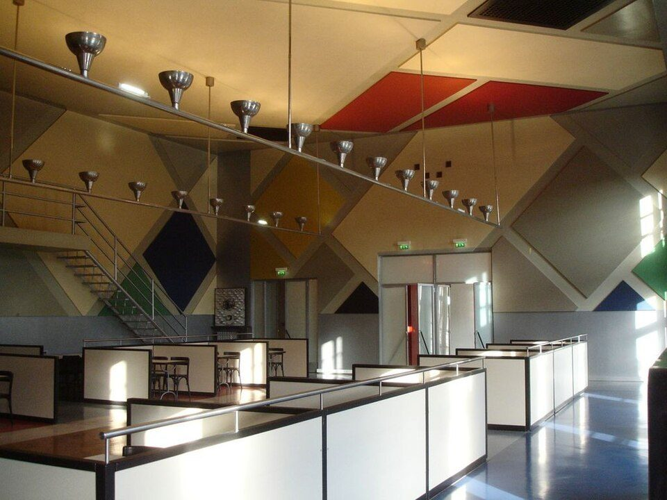

References / Architecture / 142
Ciné-dancing, Aubette, Strasbourg
Van Doesburg’s cinema and dance hall of 1926–1928, reconstructed: walls and ceiling covered with large colored squares set on the diagonal.
- Source
- Wikipedia: Aubette (building)
- Creator
- Theo van Doesburg
- Made
- 1926–1928; covered over in 1938; reconstructed in the 1990s and 2000s
- Style
- De Stijl (agent-proposed, not yet reviewed by a person)
- Moods
- Dynamic, theatrical, geometric
- Evidence
- Inspected a photograph of the reconstructed room by the Commons user Clostridium (File:Aubette cine dancing doesburg.JPG, 1024 × 768 px, viewed at 960 px). The photograph shows the present reconstruction, not the 1928 surfaces.
- Reviewed
- Rights
- Open license, stored. License: public domain. Rights policy

Context
Theo van Doesburg, Sophie Taeuber-Arp, and Jean Arp decorated the Aubette entertainment complex on Place Kléber in 1926–1928. Van Doesburg did two cafés and two dance halls. Wikipedia).
The decorations were covered over in 1938. The cinema and staircase became historic monuments in 1985, and renovations were completed in 1994 and 2006. Wikipedia).
Wikipedia describes the scheme as an orthogonal composition in primary colors; the photograph shows the panels turned 45°, so that description does not match this room.
Observed
- Raised bands divide the walls and ceiling into large squares turned 45°, so every edge runs on the diagonal.
- The squares are painted red, yellow, dark blue, green, gray, and off-white; two red panels sit on the ceiling.
- A metal balcony and stair cross the left wall; a straight rail hung from the ceiling carries a row of conical metal lamps.
- Low booths with white panels edged in black stand on a blue floor.
- The warm lighting of the photograph shifts the whites and yellows toward cream.
Why it belongs
The room is van Doesburg’s counter-composition in space: the same flat colored planes as neoplasticism, turned against the orthogonal architecture. It is the clearest built example of the diagonal that divided him from Mondrian.
Use it as a contrast case for the fingerprint: a diagonal grid in the De Stijl palette should read as Elementarism.
Borrow
For a single dramatic room or section, rotate a De Stijl grid 45° against an orthogonal frame, and keep everything else square.
Measured
Machine-extracted by tools/image-traits.py on . Full measurement.
- Mean chroma
- 0.15
- Palette
- #664923 7%
- #3e372b 6%
- #44301a 5%
- #ba965f 5%
- #27221a 4%
- #cba56a 4%
- #fdfefb 4%
- #615c4c 4%

